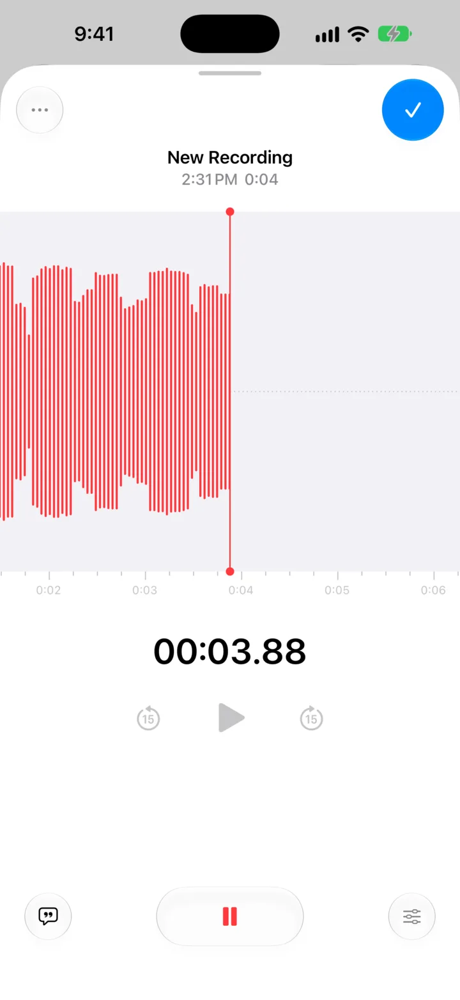
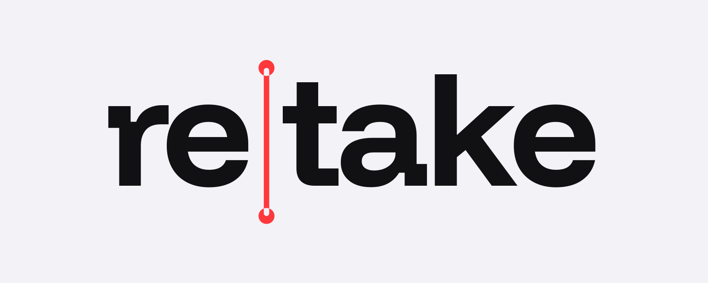
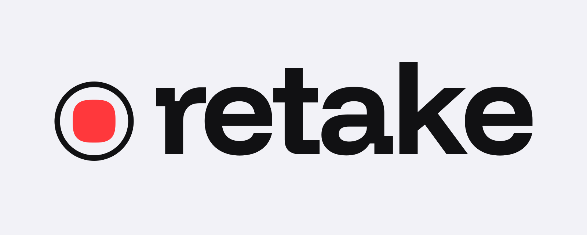
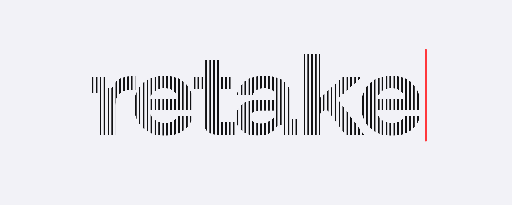
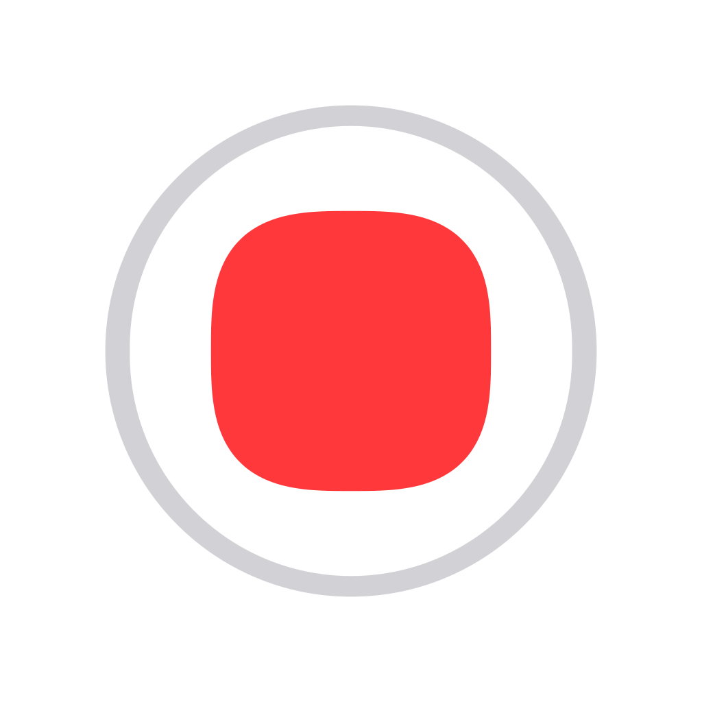
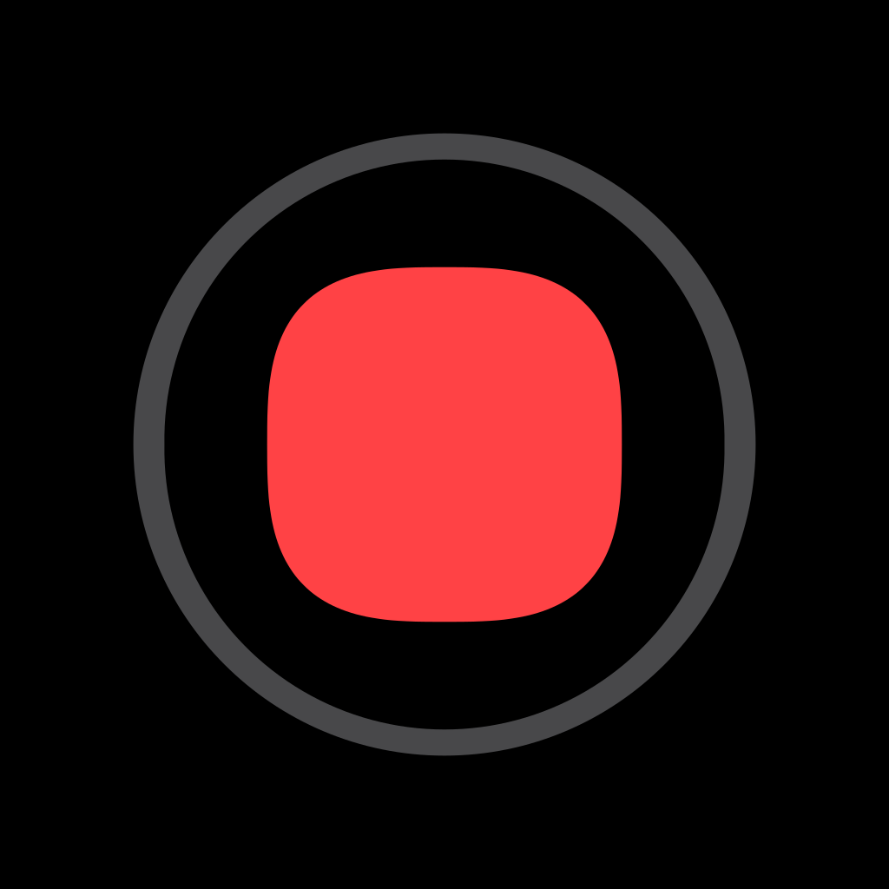
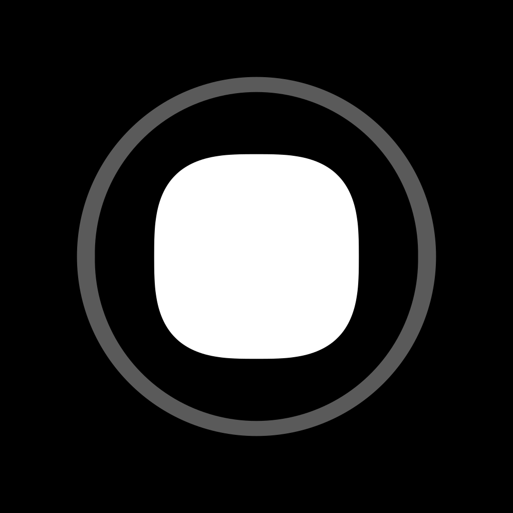
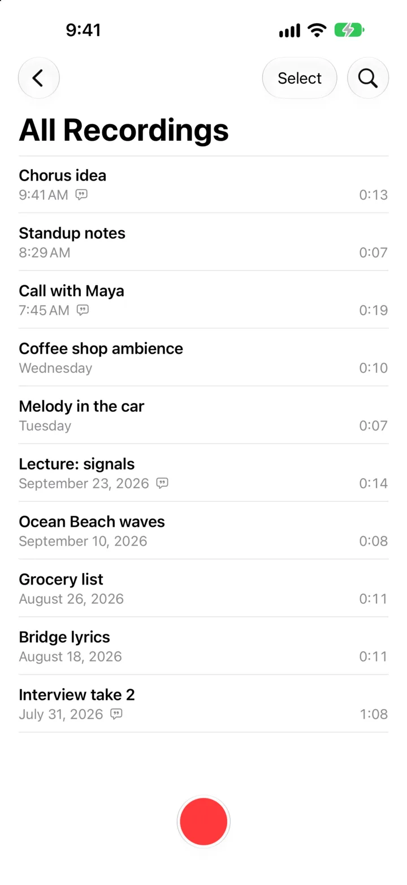
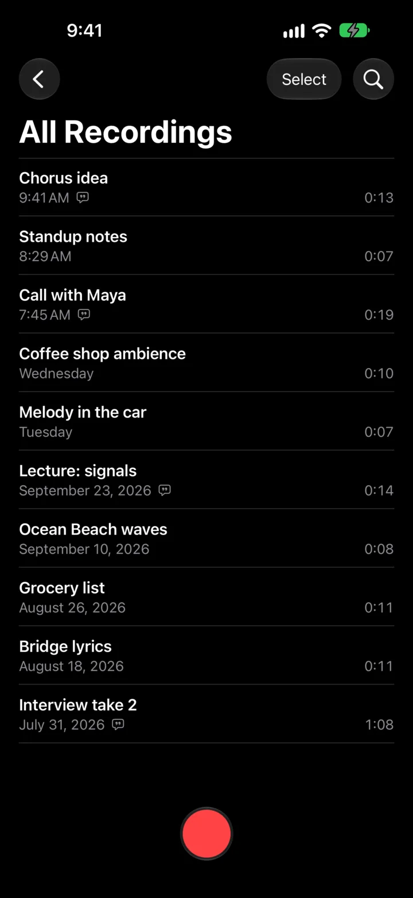

Voice Memos, rebuilt.
It never loses a take.
Same screens, gestures and animations as iOS 27. Open source, in SwiftUI.

Logo · three directions, B picked






Color · the app's own, each meaning what it means in the app
Type · Funnel Display, Funnel Sans, Geist Mono
It never loses a take.
Stop is instant.
“it looks good. but do anything complicated with it and it probably breaks.”
Same screens, gestures and animations as iOS 27. Open source, in SwiftUI.
The file closes the moment you tap stop, and the take is in the list before the sheet finishes collapsing. 0:04 · 0:06 · 0:04
xcodegen generate
Motifs · all from the recording screen
The button. The disc morphs into the stop square and back. The mark is that morph, caught halfway.
The playhead. A 2px line with a dot at each end marks "now": red while recording, gray when idle. One per view.
The bars. 2px bars on a 5px pitch, red while a take is live, gray once it's saved. Only ever real data: a take, or the 300 the test records.
The trim band. Trim's yellow selection, as a highlight under the one phrase that matters. Hero and link previews only.
Fields · the real app sits on its own background

